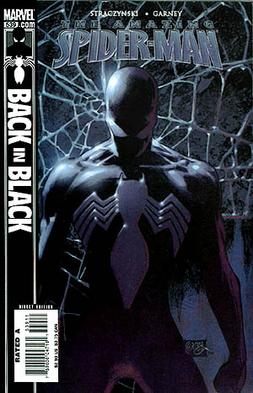
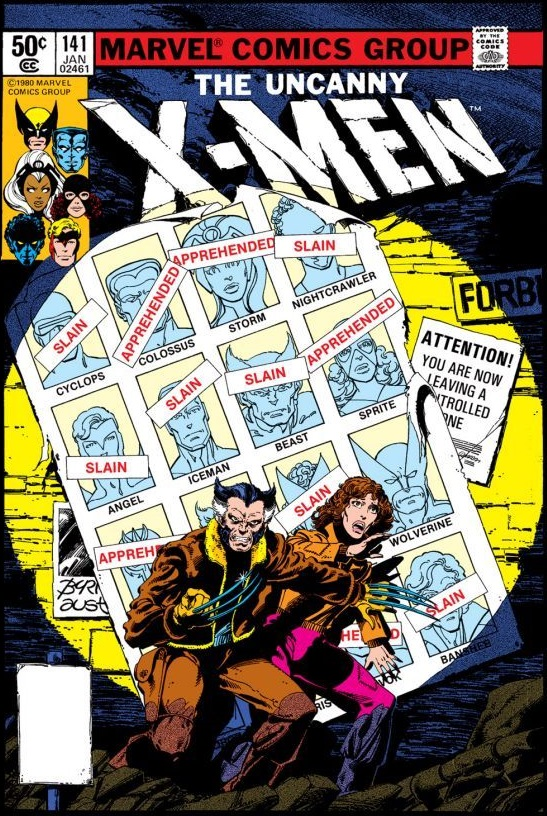
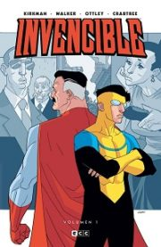

Spider-Man Back in Black
La bala de un francotirador lo cambia todo
en la vida de Spider-Man (Peter Parker)
Enfundado en su traje negro, Spider-Man
no se detendrá ante nada para encontrar
al hombre que apretó el gatillo y, aún
más importante, al hombre que dio la
orden de matar. Este es el Hombre Araña
en su momento más oscuro.
Old Man Logan
Construida como una especie de versión
marvelita del Sin Perdón de Clint
Eastwood, el Viejo Logan nos narra la
historia de un hombre que para salvar
a su familia se emprenderá en un
viaje en el que afrontará viejos
terrores, encontrándose a sí mismo
y al hombre que una vez fue.

X-MEN: Dias del futuro pasado
Nos ubicamos en un futuro donde los mutantes estadounidense
estan al borde de la extincion y retenidos por los centinelas
con lapidas de nombres conocidos que es el precio a pagar de
nuestros heroes, los escasos supervivientes de los X-MEN tienen
un plan desesperado, enviar al pasado a Kitty Pryde para impedir
un asesinato que acabara desencadenando el apocaliptico futuro
donde viven
Superman Red and Blue
Se han narrado infinidad de historias de Superman.
Como la del bebé que llegó desde Krypton en un
cohete, el adolescente de Kansas que luchó por
ocultar sus poderes, o el protector de Metrópolis,
Su influenciase sintió tanto en la Tierra como en los
lugares más recónditos del espacio. Pero todavía queda
mucho por que contar, esta vez en sus característicos
colores.
Rojo y Azul.
Batman the dark knight returns
Ha pasado tiempo desde que Bruce Wayne, decidió
retirarse de su vida de superhéroe. Aun con la
esperanza de "vencer a sus demonios". A la larga,
comienza a ser perseguido por sus viejas pesadillas
y al ver que el crimen en Gotham está peor que nunca
entonces vuelve a despertar su obsesión, recoge de
nuevo el manto de Batman. Tras una noche vuelve a causar
revuelo entre los incrédulos ciudadanos de Gotham que no
creen el regreso del caballero oscuro.

The Walking Dead
Catalogar Los muertos vivientes como una historia de
zombies sería hacerle un flaco favor a la historia, porque
por encima de todo es una historia sobre la vida (y la muerte),
sobre el comportamiento del ser humano y cómo este varía en
función de los hechos o de aquello que la persona lleve dentro.
Los grises lo son más que nunca y deja de haber buenos humanos
en una situación nueva en la que todo vale en favor de la
supervivencia.

Invincible
Mark Grayson, un chico normal y corriente
de instituto, la única diferencia respecto a
los demás es que su padre, Nolan Grayson, es
Omni-Man, el superhéroe más poderoso de la Tierra
y perteneciente al supergrupo The Guardians of the
Globe. A los 16 años, comienza a desarrollar superpoderes
trabaja como superhéroe bajo la tutela de su padre.
Ocasionalmente colabora con el Teen Team formado
Five Nights at Freddy's: The Silver Eyes
Charlie es una adolescente de 17 años que vuelve a su
ciudad natal para reencontrarse con sus amigos de la infancia
y visitar el restaurante misterioso donde murio un amigo suyo
en el pasado llamado Freddy Fazbear Pizza, que alguna vez
fue propiedad de su padre que murio hace años, entre todos
se reunen en el centro comercial abandonado donde se encuentra
el local pero deveran resolver los misterios de ese lugar
si quieren salir vivos

Scott Pilgrim's Precious Little Life
Se trata de una comedia romántica sobre la vida de
Scott Pilgrim, un joven de 23 años que reside en Toronto
y es bajista en una banda de rock. A lo largo de la serie
se enamora de una misteriosa chica estadounidense, Ramona
Flowers, pero para salir con ella deberá derrotar antes a
sus siete «exnovios malvados», a través de aventuras con
situaciones sobrenaturales y surrealistas.

Jujutsu Kaisen
La historia gira en torno al estudiante Yuji Itadori,
quien se une a una organización secreta de hechiceros
para matar a una poderosa maldición llamada Ryōmen Sukuna
tras convertirse en su anfitrión luego de comerse uno de
sus dedos, va a la escuela de hechizeria y aprende a
manejar y controlar la energia maldita que ahora posee,
y se dedica a exorcizar maldiciones junto a sus compañeros.